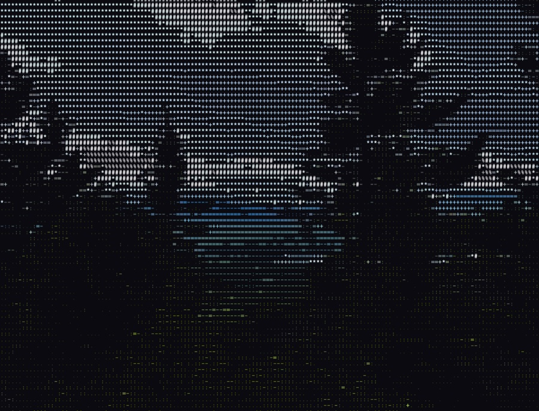

Deepwoods Device Detection is a tripwire for radios. Drop it at a campsite, a cabin, a trailhead or a back room, power it up and walk away. It spends its first 5 minutes learning every Bluetooth and WiFi device that is already around, treats all of them as “normal”, and from then on stays quiet unless something new shows up.
When a phone, tracker, laptop, access point or anything else with a radio appears that was not there during the baseline, Deepwoods sends an alert out over a Meshtastic LoRa mesh, so you hear about it on your handheld or phone kilometers away, with no cell service and no internet.
Baseline
Scans BLE + WiFi and records every MAC it sees. Everything heard here is whitelisted.
Watch
Keeps scanning nonstop. Devices from the baseline are ignored.
Alert
A device that is not in the baseline triggers one alert over the mesh. Each new device alerts once.
- BLE
- Active scan of advertisements (NimBLE)
- WiFi APs
- Active scan, access point BSSIDs
- WiFi Clients
- Probe requests, promiscuous, ch 1–13 hop
- Capacity
- 200 BLE / 200 AP / 500 probe MACs per boot
- Alerts
- Meshtastic text, broadcast on channel 0
- Network
- None. No WiFi join, no cloud, no app
┌──────────────────────────────────┐ │ XIAO ESP32-S3 (Deepwoods) │ │ BLE + WiFi scan, baseline, diff │ │ D4 (GPIO5) TX -> Heltec RX 19 │ │ D5 (GPIO6) RX <- Heltec TX 20 │ └──────────────────────────────────┘ │ UART 115200 ┌──────────────────────────────────┐ │ Heltec LoRa V3 │ │ Meshtastic, serial PROTO mode │ └──────────────────────────────────┘ │ LoRa mesh (multi-hop OK) │ ┌──────────────────────────────────┐ │ Your Meshtastic radio / phone │ │ "Detected non-baseline BLE: ..." │ └──────────────────────────────────┘
Built for the Mesh Detect board, which carries the XIAO and the Heltec together and already has the UART wired. Any XIAO ESP32-S3 + Heltec V3 pair works if you wire it yourself.
Plug the XIAO in
Use a real USB-C data cable. Charge-only cables won't show up as a serial port. If it's your first flash, hold the BOOT button while plugging in.
Hit Flash below
Chrome, Edge, or Opera on desktop. Your browser shows a list of serial ports: pick the XIAO. The install takes about 30 seconds.
Set the Heltec to PROTO mode
Deepwoods talks to Meshtastic over the protobuf API, not text-message mode. Configure the Heltec's serial module as shown in the Meshtastic panel below.
Deepwoods Device Detection
The full firmware: 5-minute baseline, continuous BLE + WiFi + probe-request watch, and Meshtastic alerts over UART. Every alert is also mirrored to USB serial at 115200 so you can watch it live on a laptop.
- Target
- Seeed XIAO ESP32-S3
- Baseline
- 5 minutes from boot
- UART Out
- D4 (GPIO5) TX / D5 (GPIO6) RX @ 115200
- Mesh
- Heltec V3, Meshtastic serial PROTO
In the Meshtastic app, connect to the Heltec and open Settings › Module Configuration › Serial:
- Enabled
- true
- Mode
- PROTO
- Receive (RX)
- GPIO 19
- Transmit (TX)
- GPIO 20
- Baud
- 115200
Alerts arrive as normal text messages on the mesh, broadcast on the Heltec's primary channel (index 0). Any radio or phone on that channel sees them.
Open a serial monitor on the XIAO's USB port at 115200 to watch it work. A baseline progress line prints every 15 seconds, then alerts once the baseline ends:
Deepwoods Device Detection 5 minute Baseline Scan Started Baseline progress: 14 BLE, 6 WiFi, 3 ProbeReq Baseline Scan has 4 minutes remaining. ... Baseline complete: 41 BLE, 9 WiFi, 12 ProbeReq === Baseline complete === Detected non-baseline BLE: 5c:3a:91:0e:22:7b Detected non-baseline ProbeReq: A4:83:E7:10:9F:02 Detected non-baseline WiFi: 9E:1B:44:C0:5D:61
Only the Detected non-baseline ... lines go out over the mesh. Everything else stays on USB.
The baseline is relearned every boot
The whitelist lives in RAM only. Every power cycle or reset starts a fresh 5-minute baseline. Place the node first, power it up, then leave the area so your own phone, watch and earbuds don't end up whitelisted (or, if you want them ignored, stay close during the baseline).
Random MACs look like new devices
Modern phones rotate their Bluetooth and WiFi probe MAC addresses every few minutes. A phone that was present during the baseline can still trigger alerts later when it rotates. Treat a burst of BLE or probe alerts as “someone is here”, not as an exact device count.
One alert per device
Each MAC alerts once per boot. Deepwoods tracks up to 200 BLE, 200 access point and 500 probe-request MACs; in a very busy RF environment it stops tracking new ones of a type once that list is full. It's made for quiet places.
Nothing shows up in the port picker
Try a different USB-C cable (charge-only won't work), or hold BOOT while plugging in to force download mode. The XIAO S3 uses native USB, so no extra drivers are needed on macOS, Linux or Windows 10+.
Alerts print on USB but never reach the mesh
The Heltec is almost certainly in TEXTMSG or DEFAULT serial mode. Deepwoods needs PROTO. Also confirm RX 19 / TX 20 at 115200, and that the Heltec has rebooted after the change.
My receiving radio doesn't see alerts
Alerts go out on the Heltec's primary channel (index 0). Your receiver needs that same channel with the same name and key.
Too many alerts
The node probably booted while you were nearby and then you walked away and came back with rotated MACs, or it was powered on somewhere busy. Power-cycle it where it will live, and let the 5-minute baseline finish undisturbed.